Chapter 9 Data Store Structures
9.1 File Organization
- 数据库是一系列问价你的形式存储的
- 每个文件都是一个记录序列
- 记录是一系列字段
我们假设记录大小是固定的(稍后我们可以考虑可变长度记录)，每个文件仅包含一种特定类型的记录，不同的文件用于不同的关系，一个记录不得大于一个硬盘块的大小(而一个硬盘块可能包含多个记录)
接下来我们以下图所示的一系列记录为例
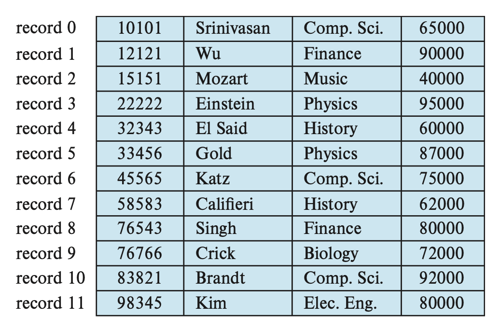
9.1.1 Fixed-Length Records
一个简单的方法是：直接为边长类型赋予最大字节数的空间。因此每instruction记录就要占据53个字节的空间。但是这种方法会带 来以下问题：
- 除非块的大小正好是53的倍数(通常不太可能)，否则有些记录可能会跨过块的边界，即某些记录会位于两个块内。访问这样的记录就需要两次读写操作
- 解决方案：为每个块仅分配能够完全容纳得下的记录，多出来的小空间直接忽略掉
- 同时我们很难删除这样的记录，因为删除记录后需要其他记录填补这块空间，或者直接忽视这块空间
删除record3
- 整体前移：被删除记录后面的所有记录向前移动，填补被删除记录所在的空间。这种方法需要移动大量的记录，效率不高
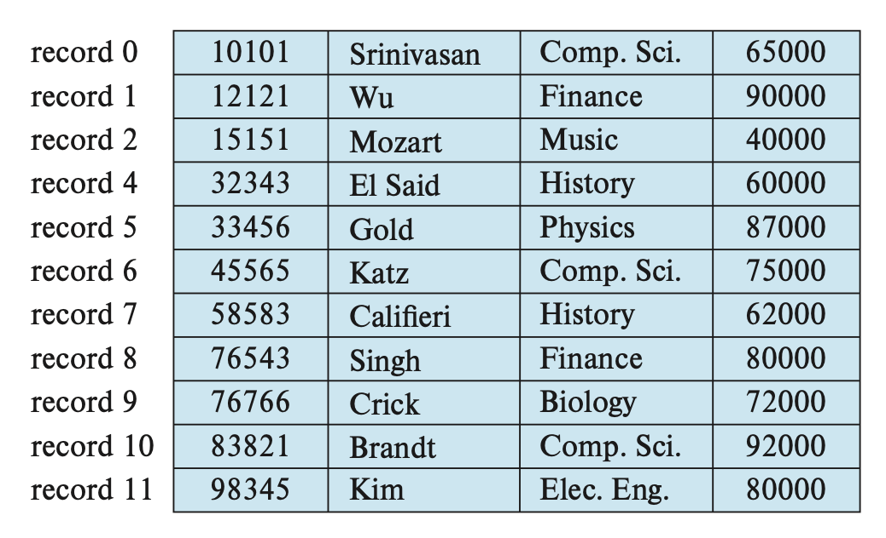
- 覆盖替换：直接拿最后一条记录填补被删除的记录所在空间，但这样会导致额外的块访问(需要在记录无需有序的条件下进行)
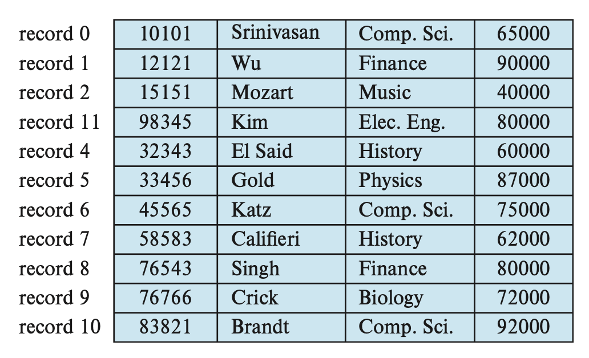
- 等待插入：因为通常插入操作比删除操作更频繁，所以就暂且先让被删除记录所在的空间是开放的，然后等待之后的插入
- 在文件开头，我们会分配一些特定的字节作为文件头(File Header),里面包含有关于文件的信息，这里我们只关心第一个被删除的记录(空间空出来了)的地址信息。在这个记录上，我们记录第二个被删除的空余记录以此类推。这些被删除的记录构成了一个链表，通常称为空表(Free list)，该链表通过下一条空闲地址在该文件(
block)的偏移量进行寻址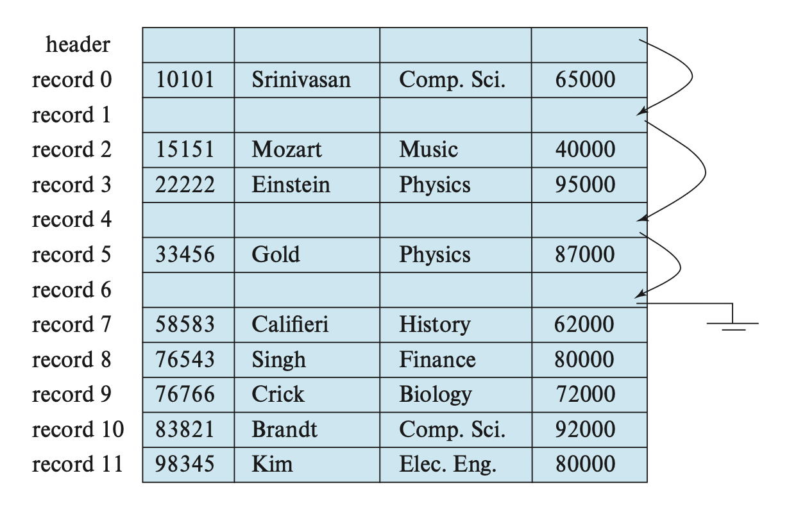
- 在文件开头，我们会分配一些特定的字节作为文件头(File Header),里面包含有关于文件的信息，这里我们只关心第一个被删除的记录(空间空出来了)的地址信息。在这个记录上，我们记录第二个被删除的空余记录以此类推。这些被删除的记录构成了一个链表，通常称为空表(Free list)，该链表通过下一条空闲地址在该文件(
当插入新记录时，我们将这个记录放在文件头(文件头此时相当于一个哨兵指针)所指的记录上，然后让文件头指向下一个空闲的记录。如果没有空闲空间的话就将记录插在文件末尾
Variable-Length Records
对于变长记录，主要会出现两个问题：如何表示单个的记录，使得提取单个属性较为容易，即便这个属性是变长类型？如何在一个块内存储变长记录，使得从块中提取记录较为容易
- 可变长度记录在数据库系统中以多种方式出现
- 在文件中存储多个记录类型
- 允许一个或多个字段(varchar)具有可变长度的记录类型
- 允许重复字段的记录类型(在某些较旧的数据模型中使用)
- 某些属性可以是空的
对于第一个问题，通常，变长属性被表示为两部分：定长的信息(偏移量即该记录在块中的起始地址+长度即变长属性的大小)，以及变长属性值。
Instructor的结构图
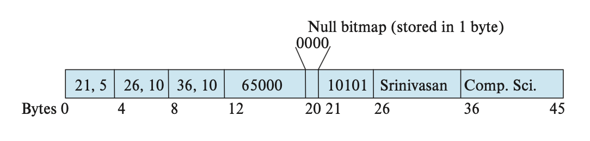
可以看到，这个记录先存的是三个变长属性的定长信息，然后是一个定长属性值，最后是变长属性值。
在定长属性值和变长属性值之间有一组0，称为空位图(Null Bitmap),用于记录属性值是否为空。在这个例子中，由于一条记录有4个属性，因此用4个0来分别表示每个属性值的情况。假如salary为空，那么空位图的第四位就会被设为1.有些情况下，空位图会被放在记录的开头位置，这样做可以节省空间(因为一旦空位图全为1，后面就不需要存数据了)，但是代价是需要先从记录中提取属性。这种方式对于具有大量字段，且大多数为空值的记录而言很有用该可变长记录从第21个位置开始，长度为5
-
空位图指示记录中可变长那部分是否为空，其存储区域往往在指示不定长属性位置与大小的信息与数据之间的存贮区域
-
指示可变长度的信息由偏移量和实际长度表示，如
21,5意为偏移地址为21，长度为5，其数据的存放位置就是从21位置长度为5的数据，这就实现了将不定长属性定长化
对于第二个问题，一般情况下，我们用槽页式结构(Slotted-Page Structure)来组织在块内的记录，如下图所示
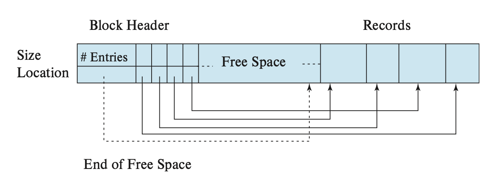
槽页式结构
- 由管理信息与书记数据两部分组成
每个数据块的起始处有一个记录头，在记录头中通常包含有记录下面三种信息的变量字段
- number of records：记录在这个块中总共包含了多少个记录项(record)
- end of free space:块中的空闲空间结束地址
- location and size of each record:包含有每个记录项(record)在系统中存放确切的地址信息和该记录项的长度：相当于告诉使用者，在这个块指向每个记录项的指针和需要访问整个记录指针需要移动的位置(偏移+长度)
record在block中从block结构体的结尾的地址处连续分配。
block中的空闲空间也同样是连续的，空闲空间位于header中用于记录块中每个记录位于块中的具体位置的地址链表与最新被分配空间的记录项之间
在块内，记录被分配到的空间是连续的。而空余空间从头(block header)的末尾到第一个记录之间的空间也是连续的
大致过程
flowchart TD
A[块初始化] --> B[头部区域Header]
B --> C["记录槽数组(Slot Array)<br>• 记录位置/大小<br>• 按插入顺序存储"]
C --> D["空闲空间管理<br>(尾部→头部方向)"]
D --> E{操作类型}
E -->|插入记录| F["从空闲空间尾部分配<br>更新槽数组和空闲位置"]
E -->|删除记录| G["标记槽为删除状态,向前移动前置记录,合并空闲空间"]
F --> H["更新头部信息：<br>• 记录数量+1<br>• 空闲空间结束位置"]
G --> H
H --> I{是否继续操作}
I -->|是| E
I -->|否| J[块存储完成]
style A fill:#f9f,stroke:#333
style B fill:#bbf,stroke:#333
style D fill:#f96,stroke:#333
style F fill:#9f9,stroke:#333
style G fill:#f99,stroke:#333如果是向这种结构中插入一个record
- 首先在空闲的结尾处为其分配一种用来存放记录项的空间
- 然后包含了该记录项所在的(起始地址的信息，记录项长度)的记录被作为一个小记录单元插入到槽数组中
如果想从这种结构中删除一条记录的话
- 首先将该系统为记录项在块中分配的空间进行释放
- 然后将记录项信息链表中的小记录删除(效率不高，因为可能会导致管理区中所有的记录管理偏移量都需要进行修改)，将其值置为-1或者是使用其他的方法，使用户无法访问
这种分页槽结构体的实现没有让指针直接指向记录项，如果想要访问记录中的内容的话先通过指向头记录中的小记录中的指针，通过小记录中的(指向block中记录的指针，记录长度)来实现对记录的访问
当插入时发现free space剩余空间不足时，可以检查那些已经被删除的空间，将这些空间压缩，从而增大free space的空间。这就需要改变管理区的各个记录的偏移值，同时移动会造成记录的ID发生变化。这时我们需要构建的是Entry与Record的映射
这种间接访问使用指针的方法实现了让指针只游走于一个快结构体中，不会造成指针越位访问而造成的错误。
block header数据结构的代码
struct dmsPageHeader {
char _eyeCatcher[DMS_PAGE_EYECATCHER_LEN];
// 用于标识该结构体的类型或版本，类似于魔数(Magic Number)，
// 方便调试和验证数据块的合法性。
unsigned int _size;
// 记录整个 block 的总长度，方便计算空闲空间和验证边界。
unsigned int _flag;
// 标识符，用于标记该 block 的状态，例如是否被删除(dropped)或是否有效。
unsigned int _numSlots;
// 记录当前 block 中的槽(slot)数量，即记录的数量。
// 每个槽对应一个记录的元信息(如偏移量和长度)。
unsigned int _slotOffset;
// 槽数组的起始位置偏移量，指向槽数组的起始地址。
// 槽数组存储每条记录的元信息(如记录的起始地址和长度)。
unsigned int _freeSpace;
// 记录 block 中空闲空间的总大小，方便快速判断是否可以插入新记录。
unsigned int _freeOffset;
// 记录空闲空间的起始地址，指向 block 中空闲空间的起始位置。
// 新记录插入时会从这个位置开始分配空间。
char _data[0];
// 实际存放记录数据的区域。
// 这是一个灵活数组成员，虽然声明为 0 字节，但可以动态分配空间。
// 通过 `&dmsPageHeader->_data[0]` 可以访问记录数据的起始地址。
};
9.2 Organization of Records in Files
记录在文件中的组织方式有以下几种：
- 堆(Heap)文件组织：任何记录可以放在文件的任何地方，无需考虑顺存 。一个关系可以存放在一个或多个文件中
- 顺序(Sequential)文件组织：根据每个记录的搜索键(Search Key) 的值，按顺序存储记录
- 多表聚集(Multitable Clustering)文件组织：来自不同关系的记录被存储在相同的文件内，以减少连接运算的成本
- B+树文件组织：即便在插入、删除和更新操作改变记录顺序的情况下，也能保持记录的顺序
- 哈希文件组织：根据以下属性计算哈希函数，用于指明哪个块上放哪个记录
9.2.1 Heap File Organization
在堆文件组织中，一个记录可以被放在文件的任意位置上。但一旦确定位置后，一般不能再去移动这个记录了
- 插入记录时，可以采取始终加在文件末尾的策略。
- 删除记录时，需要考虑利用删除记录释放的空间，用于存储新记录，以最大化利用空间
大多数数据库会采用一种称为空余空间(Free-Space Map)的数据结构，用于高效寻找空余空间。这个数据结构通常用一个数组表示，每个元素对应一个块，其值表示对应块的空余空间比例。为了找到能够存储新记录的块，数据库需要扫描空余空间图，来找到有足够空间存储记录的块。如果没有这样的块，那么需要为这个关系赋予一个新的块。
对于大型文件，这样的扫描还是太耗时了，此时我们可以创建一个第二级的空余空间图，七元素对应主(第一级)空余空间图中若干个元素(相当于分组)的最大值。对于更大的文件，也可以创建更多层级的空余空间图
堆文件组织
假如空余空间图的每个元素的大小是3位，那么元素值的最大值是8.当某个元素为7时，表明对应块内至少有$7/8$的空间是空余的
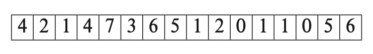
假如第二级空余空间图中的宇哥元素对应第一级的4个元素，那么其里面的内容为
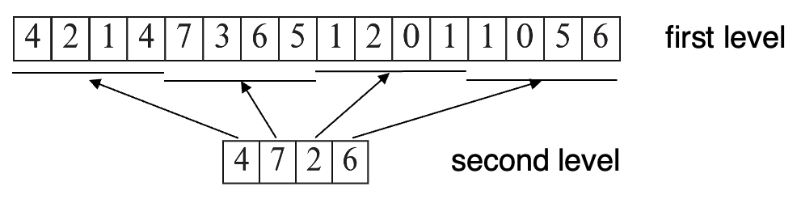
如果每次更新就要向硬盘写入空余空间图的话，那么代价是很高的。所以一般会周期性写入空余空间如，但这样做硬盘里的空余空间图有过时的风险，访问时就会出现错误
9.2.2 Sequential File Organization
顺序文件(Sequential File)用于高效处理有序的记录，它基于搜索键(Search Key)实现。这个搜索键包含了任意的属性，不必是主键或超键。
最理想的方式是空间上也是连续的
为了更快地检索记录，我们用指针将这些记录连接起来。并且为了最小化块的访问次数，我们将记录按搜索键顺序进行物理存储。
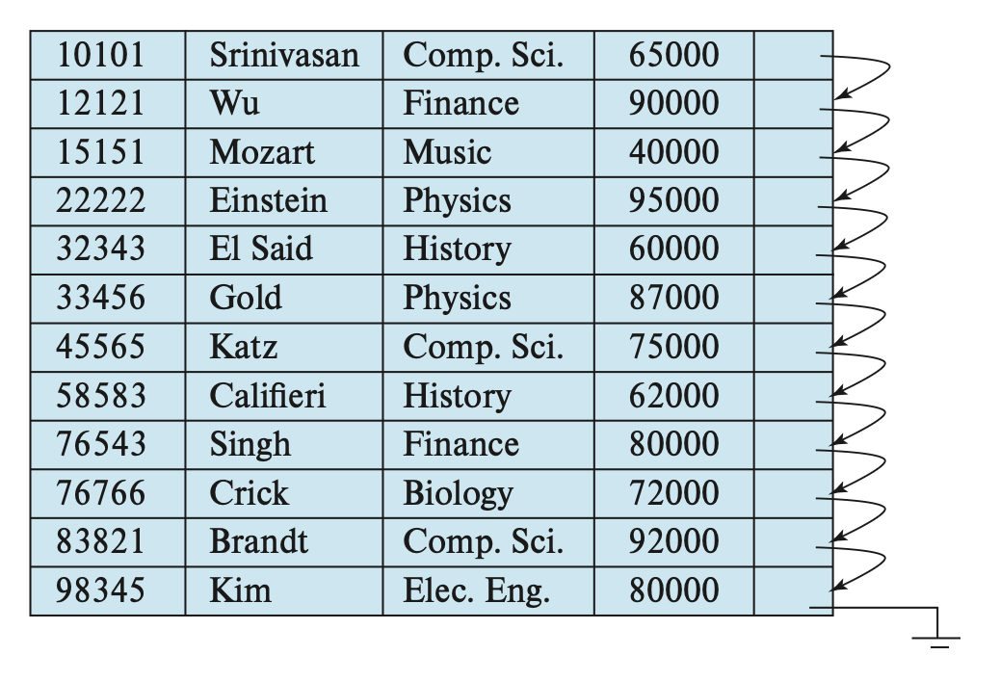
顺序文件组织比较像链表，其好处是让我们能够有序读取记录，这对显示记录，以及某种查询处理算法而言很有用。但维护记录在物理层面上的顺序比较困难，因为记录随时会被插入和删除
- 对于删除，通过移动指针就能解决
- 对于插入，需要遵循以下规则：
- 在记录按搜索键插入之前，找到这个记录在文件中的位置
- 如果存在空余记录，且位于和该记录相同的块上，则直接将新记录放在这个空余记录上。否则的话，将新记录插入到溢出块(Overflow Block)
上述插入的两种情况都需要调整相应的指针，以保持搜索键的顺序
下图展示了插入一条记录之后的顺序文件
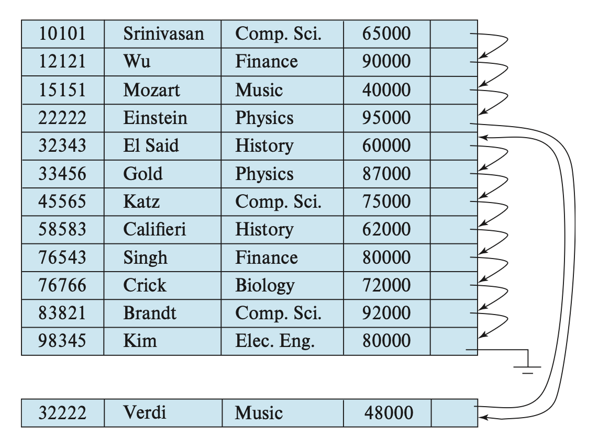
如果溢出块内的记录不多，那么上述插入策略表现较好。但是随着溢出块内的记录增多，搜索键顺序和物理顺序之间的关联会逐渐丢失，那样的话顺序处理就变得不那么有效。此时我们需要重新组织(Reorganize)文件，但这样的操作成本较大
9.2.3 Multitable Clustering File Organization
大多数关系数据库系统会将每个关系放在单独的一个或一组文件里。然而在有些情况下，将多个关系的记录存在单个快内会更有用
Exapmle
假如我们有department和instructor两个关系
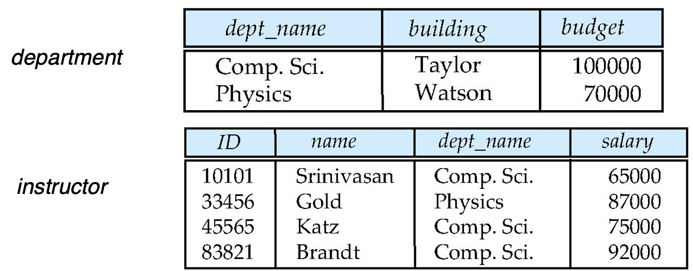
执行以下查询语句
select dept_name, building, budget, ID, name, salary
from department natural join instructor
这条语句将两个关系连接在一起，因此对于department中的每个元组，系统必须找到department值相同的instructor的元组，如果这些关系放在单独的文件上，那么在最坏的情况下，每条记录都位于不容的块，那么这个访问速度就特别地慢。
我们将这两个关系自然连接的结果放在一个文件内：
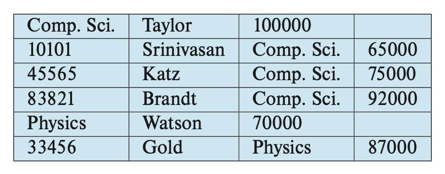
将这两个关系通过键dept_name聚焦在一个文件内。这样的文件结构提升了处理连接操作的效率
- 如果要查询$department ⋈ instructor$中的信息，这种文件管理方式是好的
- 如果查询的内容只包含一个表中的信息，那么这种方式是不好的
多表聚集文件组织(Multiple Clustering File Organization)是一种将多个关系中有关联的记录存储在一个块内的文件组织。而聚焦键(Clustering Key)适用于定义那些记录存储在一起的属性
尽管这种文件组织加快了特定的连接查询操作，但是它会影响到处理其他类型的查询的表现
9.2.4 Table Partitioning
很多数据库允许讲一个关系内的记录划分(Partition)为多个小的关系，并将其单独存储起来，通过减小关系的大小来降低某些运算的开销
我们还可以将关系划分为多个部分，并将不同的部分存储在不同的存储设备上，比如将经常用到的部分放在SSD(固态硬盘，一种辅助存储)，不怎么用到的就放在磁盘上
9.2.5 Data Dictionary Storage
前面我们只考虑了如何关系里的内容，而没有考虑如何维护关于关系的数据，比如关系模式等。我们一般称这种"数据的数据"为元数据(Metadata)。像这些元数据会被存在一个称为数据字典(Data Dictionary)或系统目录(System Catalog)的结构内。系统必须存储以下元数据
- 关系信息
- 关系的名称
- 每个关系的属性名称、数据类型及长度
- 视图的名称与定义
- 完整性约束(Integrity Constraints)
- 用户与账户信息
- 用户身份与权限信息
- 密码及认证信息
- 统计与描述性数据
- 每个关系中的元组(记录)数量
- 属性取值的分布情况(可选)
- 物理文件组织信息
- 关系的存储方式(堆、顺序、哈希等)
- 关系的物理位置(所在文件、页号等)
- 索引结构域位置的信息
实际上，我们还要存储和索引相关的信息(下一讲会详细介绍)，包括：索引名、被索引的关系名，定义索引的属性、索引构成的类型
这些元数据信息实际上构成了一个微型的数据库看所以我们可以将其存储在数据库的某个关系内，这样就可以简化系统的整体结构，并且利用到数据库快速访问的优势
下图就是一个小型的例子
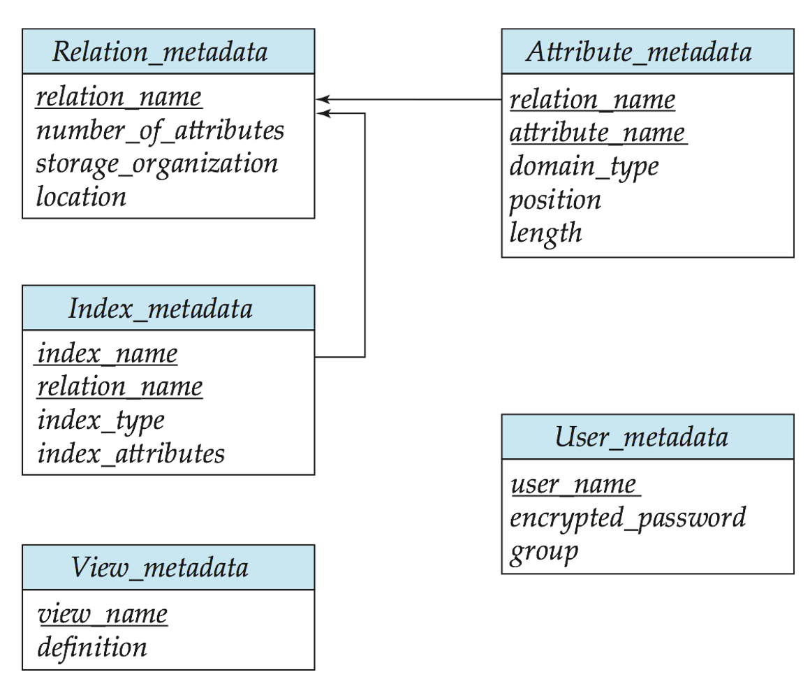
通常，存储数据字典的关系是非规范化的，以确保更快的访问。当数据系统需要从某个关系检索数据时，它必须首先查询这个叫做Relation-metadata的关系，找到这个关系的位置和存储组织，然后才能获取记录。因为这些系统元数据会被访问，因此大多数数据将其读入到一个位于内存的数据结构内，以便高效访问，而这一步会作为数据库启动的一部分
9.3 Database Buffer
因为访问硬盘内的数据会比在内存访问慢很多，因此数据库系统的一大目标是最小化硬盘和内存之间的数据块传输次数。一种方法是让主存保存尽可能多的数据块，但显然无法让主存保存所有的数据块，因此我们需要管理主存中的可用空间，而缓冲区（Buffer）就是主存中用于存储硬盘块拷贝的部分空间，而缓冲区的空间分配则由缓冲区管理器（Buffer Manager）负责
9.3.1 Storage Access
- Blocks是内存分配和数据传输的单元
- 数据库系统要找到使块在disk和memory之间传输次数最少的方案。我们可以通过在主存中保持尽可能多的块来减少对disk的访问
- Buffer:主存的一部分，可以存储disk块的拷贝
- Buffer manager:用来在主存中分配buffer空间的子系统
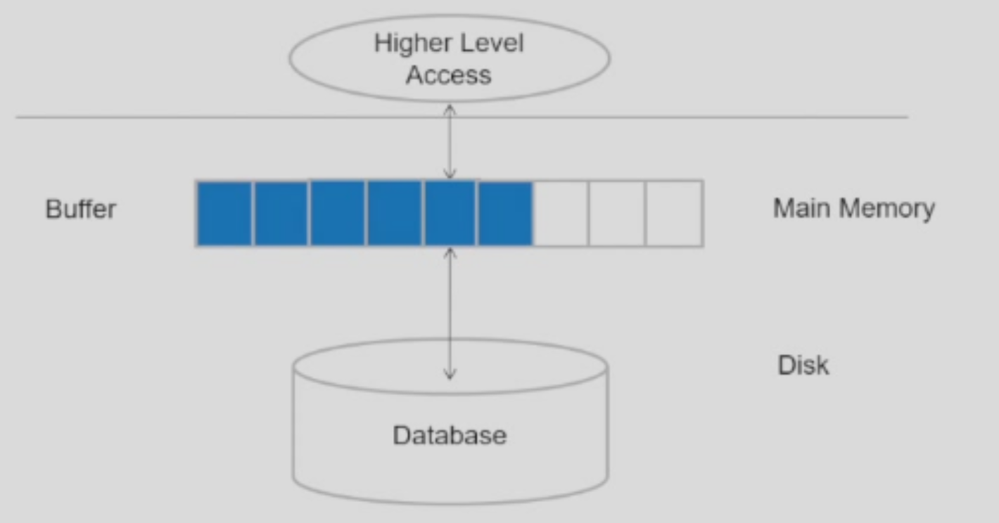
LRU
- Supposing there are four buffer pages
- Initial is empty occupied
- The accesss sequence is 1.4.8.1.5.2.3.2.4
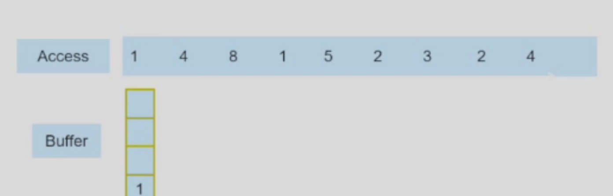
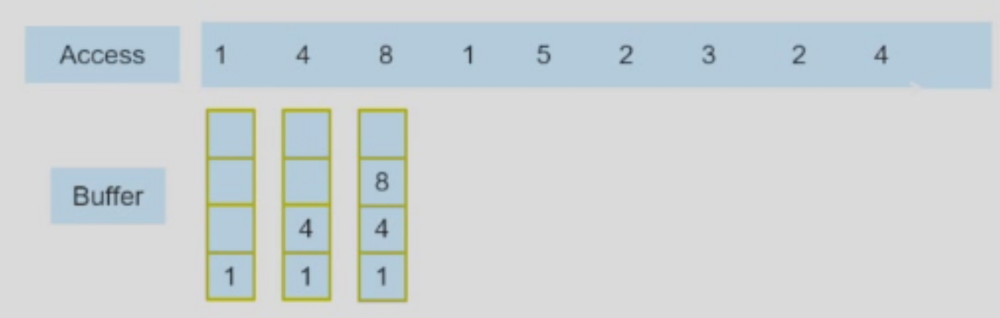
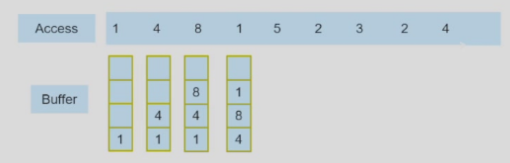
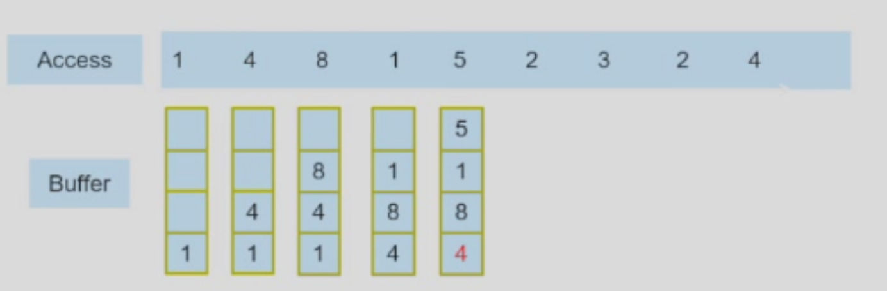
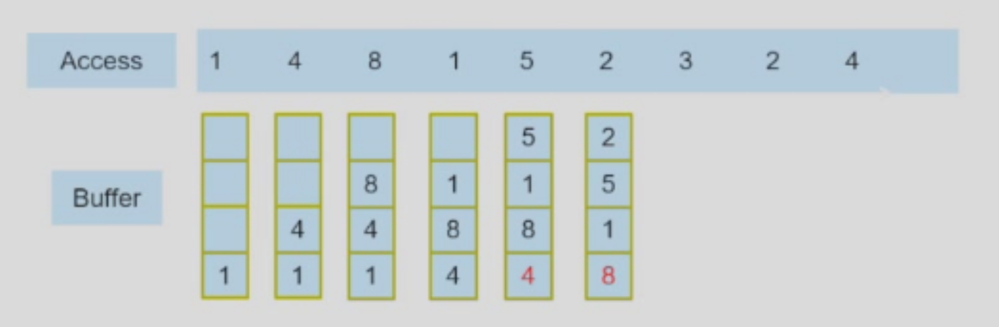
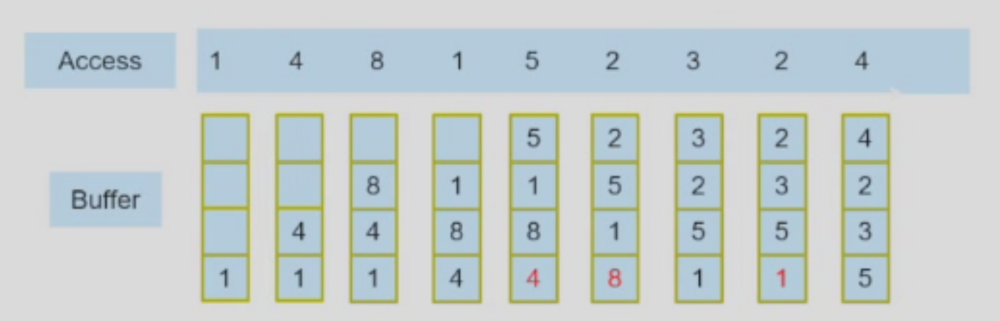
9.3.2 Buffer Management
- If the block is already in the buffer,buffer manager returns the addressof the block in main memory
- If the block is not in the buffer, the buffer manager
- Allocates space in the buffer for the block如果缓冲区已满，则需要将某些数据块移出缓冲区以腾出空间
- Replacing(throwing out) some other block, if required,to make space for the new block
- Replaced block written back to disk only if it was modified since the most recent time that it was written to/fetched from the 被替换的数据块只有在自上次写入或从磁盘读取后被修改过时，才会被写回磁盘（以避免数据丢失）
- Reads the block from the disk to the buffer,and returns the address of the block in main memory to requester
- Allocates space in the buffer for the block如果缓冲区已满，则需要将某些数据块移出缓冲区以腾出空间